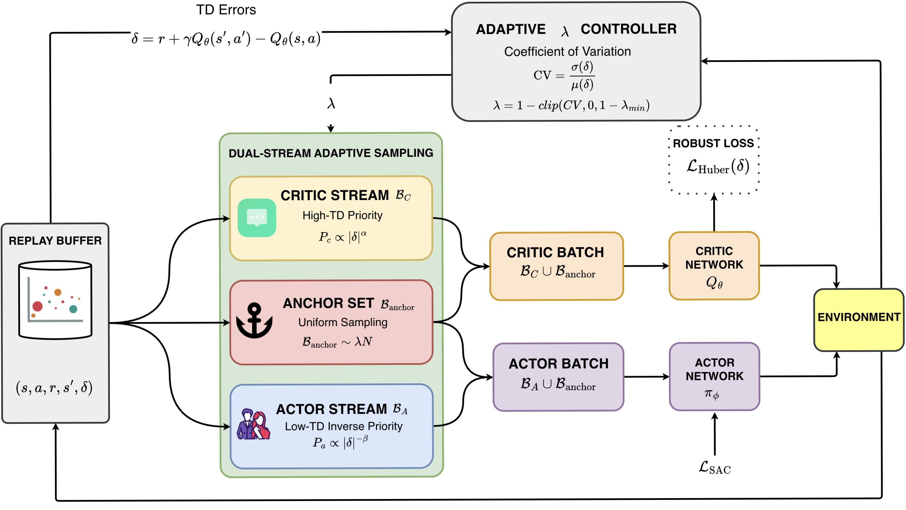

Publications
Peer-reviewed papers, preprints, and ongoing work.
Selected Publications
Profiles
For external publication records, see Google Scholar.
Peer-reviewed papers, preprints, and ongoing work.

For external publication records, see Google Scholar.